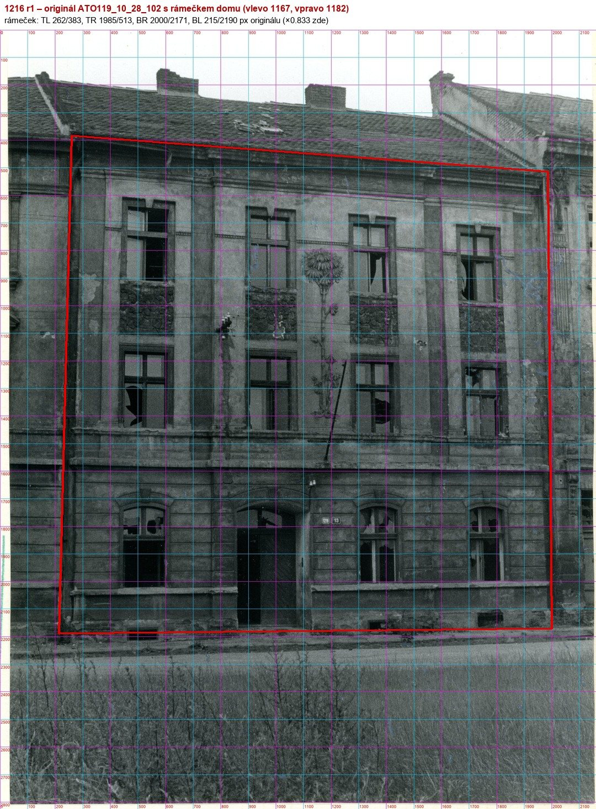
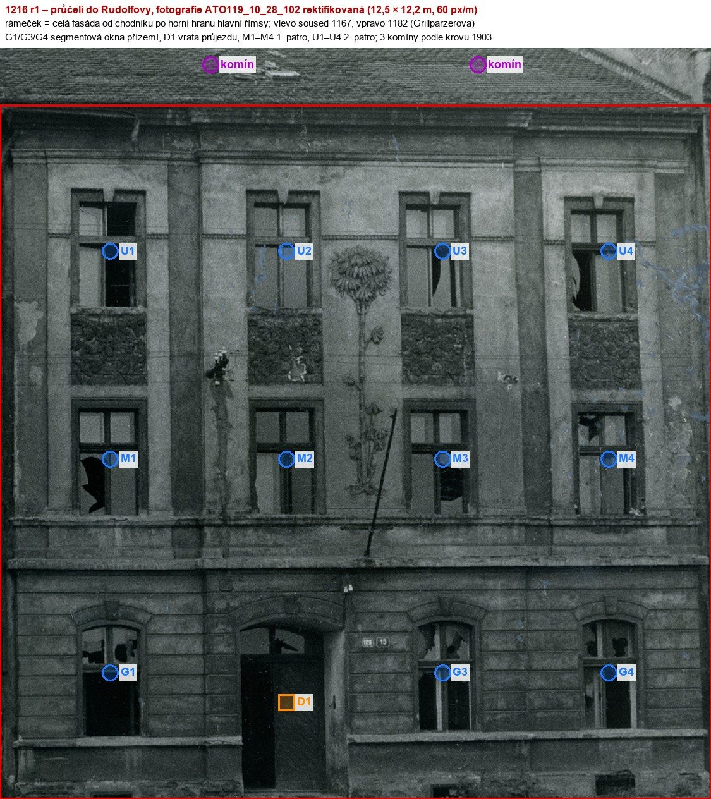
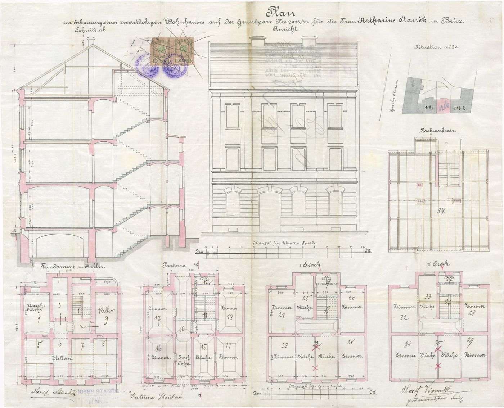
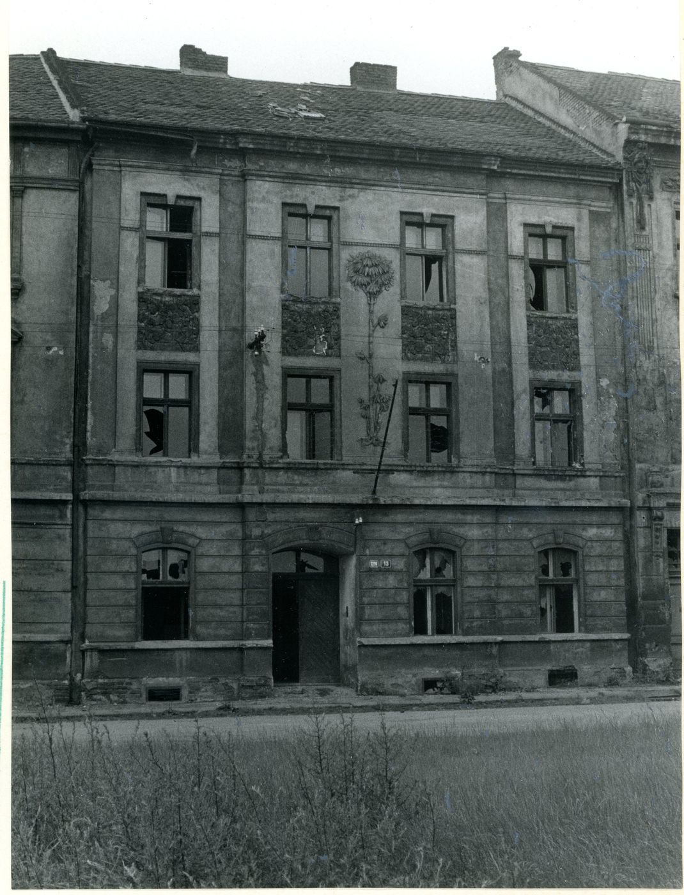
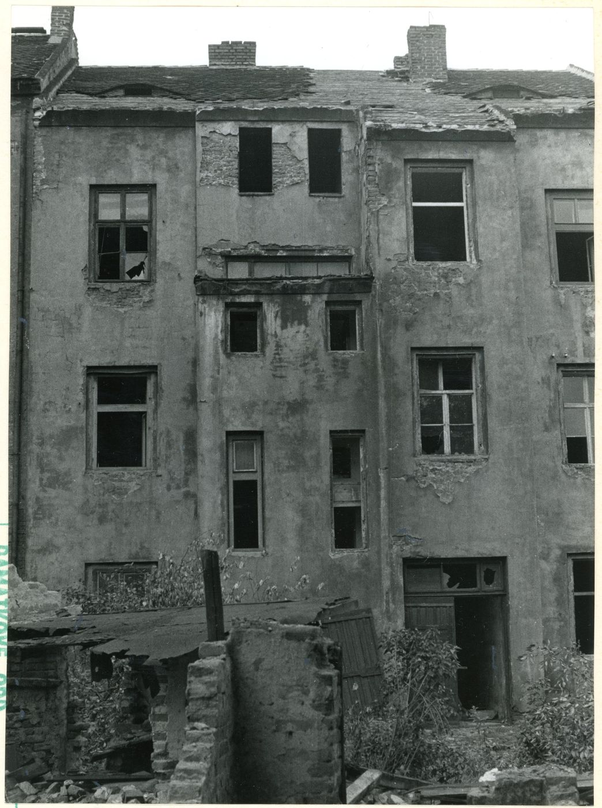
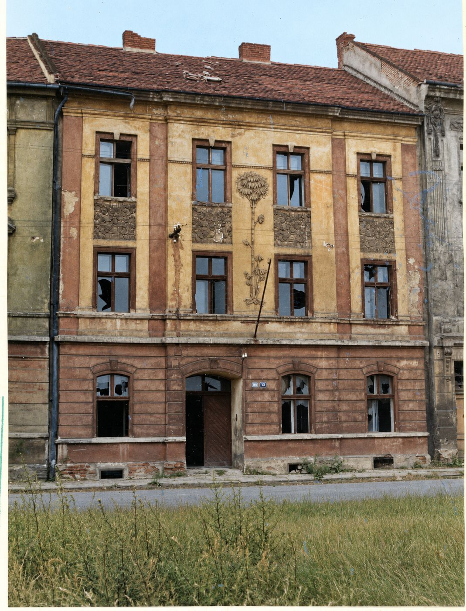
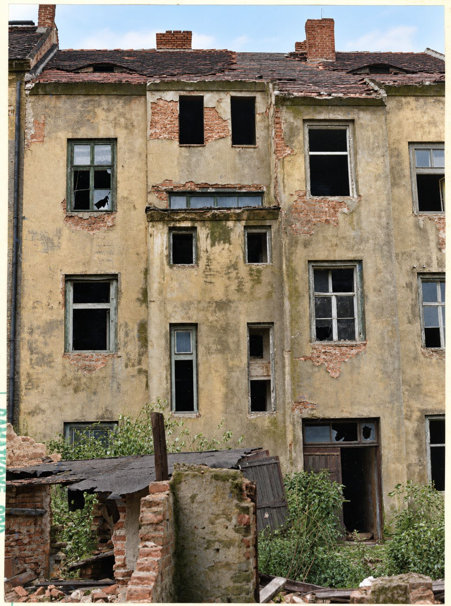

Identita domu
Dvoupatrový dům se čtyřmi osami, průjezdem a pilastry; na fotografii nese tabulku 1216/13. Osy jsou z rektifikované fotografie, výšky z plánu J. Staňka 1903.
Použité prameny: fotografie průčelí a dvora (schodišťový rizalit), plán 1903 (řez, pohled, situace 1167 | 1216 | 1182, krov, půdorysy).
Kde je dům na pramenech
Dům je v červeném rámečku, každý počítaný otvor nese ID z plánu modelu; sousedé jsou popsáni čísly. U domů jen z projektu je rámeček na výkresu pohledu.




Přílohy v databázi (5)
Všechny přílohy struktury 1216 v databázi Libuše, načtené 23. 10. 2026 (jen čtení) a otevřené. Kliknutím otevřete větší náhled.


plán / výkres
SHA-256 2d7f95049032…


fotografie
SHA-256 e18be1e5a77f…


fotografie
SHA-256 b8b8756f441b…


odvozenina (kolorovaná / FRONT)
SHA-256 cb6a3e00ef80…


odvozenina (kolorovaná / FRONT)
SHA-256 26dba1b60f9a…
Geometrie
| Revize geometrie | r3 |
|---|---|
| Poloha | GIS půdorys id 1149 (ulice Rudolfova) |
| Šířka průčelí | 12,50 m |
| Výška okapu | 12,20 m |
| Podlaží | 3 |
| Střecha podle pramenů | sedlová, hřeben podél ulice, 3 komíny (krov 1903); dvorní rizalit s pultem |
| Otvory / vikýře | 27 / 0 |
| Polygonů | 562 |
| Kontrola podkroví a střechy (brána) | prošla: vlasové zásahy 0, nekryté zdivo 0,00 m², střecha nad prázdnem 0,00 m²; fasáda: passed_partial |
Otvory po fasádách (facade_evidence)
| Fasáda | Okna po podlažích | Dveře | Počítané | Hypotéza | Pramen | Poznámka |
|---|---|---|---|---|---|---|
| main | [3, 4, 4] | 1 | 12 | 0 | photo | osy odečteny z rektifikované fotografie (realizace), nikoli z nerovnoměrného Ansichtu 1903; výšky oken foto, římsa a sokl foto + plán |
| rear | [] | 0 | 0 | 9 | photo | dvorní otvory jsou hypotéza polohy podle nerektifikované fotografie 103 (šikmý záběr ze dvora) |
| tower | [] | 0 | 0 | 6 | photo | schodišťový rizalit – okna v půlpodlažích, hypotéza |
Kontrolní pohledy


Textury
zatím bez textur
Až Codex dodá texturovaný model, objeví se v prohlížeči nahoře volba Textury (Codex).
Hypotézy
Vše níže je model_hypothesis, provisional, locked: false.
- polohy otvoru dvorniho pruceli a rizalitu odhad z nerektifikovane fotografie
- hloubka rizalitu 1.7 m (plan: 1.60 + zed)
- sirka 12.50 podle planu; GIS hrana 12.81 m (rozdil 0.31 m ponechan jako spara k 1182)
- plochy pilastru 6 cm, florální reliéfy a bosáž přízemí = textura (Codex)
Soubory
- Geometrie čp. 1216, GLB
- Pracovní model: F:\MOST\output\rudolfova_street_claude_2026-10-23\houses\cp1216\r3\cp_1216_G_r3.blend
- Plán modelu: F:\MOST\output\rudolfova_street_claude_2026-10-23\houses\cp1216\geometry_plan.json